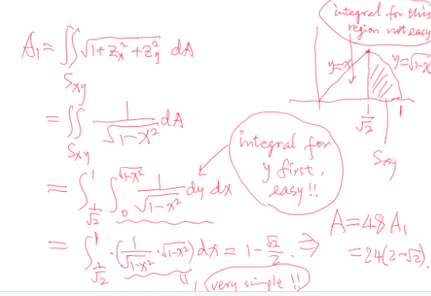
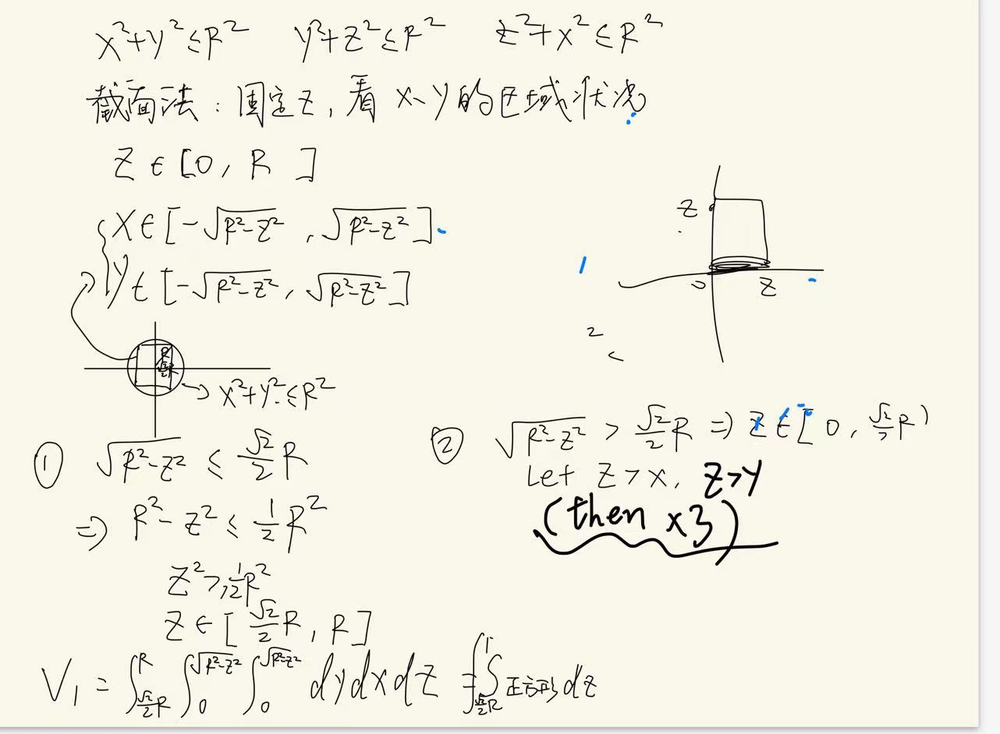

Calculus and Multivariable Calculus
surface and volume of Steinmetz solid
( See the attached vedio for further explanation: http://youtube.com/watch?v=Vf0nqYaLWIs )
Professor. Wang Duo, a very charismatic and responsible Calculus teacher who has worked for our country in the area of math for at least 50 years (which was his target before and he has realized his dream!), always says “You should try to solve one problem many times with new methods to handle and understand knowledge better”
For math learning, focusing too much on exams is not so meaningful. We should experience its beauty from the bottom of our hearts. I did not reach my target in the Multivariable Calculus and the Linear Algebra models, but Dr. Bohuan Lin said:“Exams (especially written exams) require one to figure out solutions within a very short time period, and moreover, under an intense atmosphere. From my point of view, it is really not a problem if one fails to solve those difficult and nonstandard problems under such a condition. Of course, for math study (so as for the study of other things), we should not be satisfied with merely being able to solve”standard problems”, but just try to challenge and improve yourself with deep/difficult questions under a daily condition with a natural mood, since this is the common situation in which you will be working on various tasks in your future career. ”
There are many ways to solve problems, and all of them are interesting when multiple integrals occur.
2 cylinders
It is easy
surface
volume
use method of sections directly
3 cylinders
surface

see the photo attached, which is the easiest way for computation:

volume
method 1—do not draw it(using conditional inferences)
Thanks to Dr.Bohuan Lin to teach me such a clever way which we do not need to draw the picture(only use conditional equations to solve it is interesting and a little difficult to handle it correctly).
The picture behind the method is attached to “Steinmetz(mou he fang gai)’s photo behind.png”
We have the set ( D ) defined as: \[ D \triangleq \left\{(x, y, z) \mid \begin{cases} x^2 + y^2 \leq 4 \\ y^2 + z^2 \leq 4 \\ z^2 + x^2 \leq 4 \end{cases} \right\} \]
From \[x^2+ y^2 \leq 4 , x^2 + z^2 \leq 4 \] we derive: if \[ |x| \geq \sqrt{2},|y| \leq \sqrt{2} \quad \text{then} \quad |z| \leq \sqrt{2} \] (and < is the same shape)
Similarly:
if \[|z| \geq \sqrt{2} ,|x| \leq \sqrt{2} \quad \text{then} \quad |y| \leq \sqrt{2} \]
And: if \[ |z| \geq \sqrt{2},|y| \leq \sqrt{2} \quad \text{then} \quad |x| \leq \sqrt{2} \] Therefore: \[ D = D_{\leq \sqrt{2}} \cup \bar{D} \]
Where: \[ D_{\leq \sqrt{2}} = \left\{(x, y, z) \in D \mid |x|, |y|, |z| \leq \sqrt{2} \right\} \] \[ \begin{aligned} &= \left\{ (x, y, z) \in \mathbb{R}^3 \mid |x|, |y|, |z| \leq \sqrt{2} \right\} \\ &= [-\sqrt{2}, \sqrt{2}] \times [-\sqrt{2}, \sqrt{2}] \times [-\sqrt{2}, \sqrt{2}] \end{aligned} \]
And: \[ \bar{D} = \left\{(x, y, z) \in D \mid |x|, |y|, |z| > \sqrt{2} \right\} \]
Thus: \[ \bar{D} = \bar{D}_{|x| > \sqrt{2}} \cup \bar{D}_{|y| > \sqrt{2}} \cup \bar{D}_{|z| > \sqrt{2}} \]
(This also implies: \[ D_{\leq \sqrt{2}} = \left\{(x, y, z) \in D \mid |x|, |y|, |z| \leq \sqrt{2} \right\} \])
We derive: \[ \bar{D} = \left\{ (x, y, z) \mid |x| > \sqrt{2} \right\} \cup \left\{ (x, y, z) \mid |y| > \sqrt{2} \right\} \cup \left\{ (x, y, z) \mid |z| > \sqrt{2} \right\} \]
Thus, combining all components, we get: \[ D = \left( D_{\leq \sqrt{2}} \cup \bar{D}_{|x| > \sqrt{2}} \cup \bar{D}_{|y| > \sqrt{2}} \cup \bar{D}_{|z| > \sqrt{2}} \right) \] So we could decompose it into a cube in the center and 6 common volume. the 6 volume: 6 \(\int_{ \sqrt{2}}^{2}4(4-x^2) dx\)
In summary, the whole volume is \((2 \sqrt 2)^3 +6\int_{ \sqrt{2}}^{2}4(4-x^2) dx\)

method 2—cross-section method
Thanks to Dr. Haoran Chen for teaching us such method.
We suppose z>x, z>y,（then *3） then we could continue decompose it into (1)z~(\(\sqrt 2\),2) and (2)z~(\(0,\sqrt 2\))(based on whether the square is out of the circle)

method 3
see the photo attached

(sequence)sinx/x’s 0-infinite’s integral
Dr.Fajin Wei teach me how to do it. He is very good at Calculus and Modeling. He is kind to help our students. Thanks to him very much!
integral problems with solution of alternating integral test
question: does \[\int_{0}^{\infty}sinx/x\,dx\] converge?
It is easy to think of these 2 famous but difficultly proved formula: \[\int_{-\infty}^{\infty}sinx/x\,dx=\pi \] \[\int_{-\infty}^{\infty}e^{-x^2}\,dx=\pi \] However, they are not useful, which is how charasmatic the math is! I love math!
\[=\Sigma_{n=1}^{\infty}\int_{2(n-1)\pi}^{2n\pi}sinx/x\,dx \] Then we let \(x-[2(n-1)\pi]=y\)(dx=dy)
so \[=\Sigma_{n=1}^{\infty}\int_{0}^{2\pi}siny/(y+[2(n-1)\pi])\,dy\] =\[=\Sigma_{n=1}^{\infty}\int_{0}^{\pi}siny/(y+[2(n-1)\pi])\,dy+\Sigma_{n=1}^{\infty}\int_{\pi}^{2\pi}siny/(y+[2(n-1)\pi])\,dy\]
Then we let y-\(\pi\)=z(dy=dz)
\[=\Sigma_{n=1}^{\infty}\int_{0}^{\pi}siny/(y+[2(n-1)\pi])\,dy+\Sigma_{n=1}^{\infty}\int_{0}^{\pi}-sinz/(z+[(2n-1)\pi])\,dz\] \[=\Sigma_{n=1}^{\infty}\int_{0}^{\pi}sinm/(m+[2(n-1)\pi])\,dm+\Sigma_{n=1}^{\infty}\int_{0}^{\pi}-sinm/(m+[(2n-1)\pi])\,dm\]
so if \[a_n=\int_{0}^{\pi}sinm/(m+(n-1)\pi)\] \[\int_{0}^{\infty}sinx/x\,dx=a_1-a_2+a_3-a_4+...+a_n\], which is an alternating series!
Coincidently, it is decresing and \(a_n<\int_{0}^{\pi}1/(n-1)\pi\,dm=1/(n-1)\), and \(\lim_{{n \to \infty}} \left( \frac{1}{n-1} \right) = 0\) so \(\lim_{{n \to \infty}}a_n=0\) So it converges(Alternating series test).
similar question 2
Thanks for Dr.Chi-Kun Lin to teach me this kind of problems!
\[ \int_0^\infty \frac{1}{1 + x^p \sin^2 x} \, dx \]
\[ \sum_{n=0}^\infty \int_0^{\frac{\pi}{2}} \frac{1}{1 + \left( n + \frac{1}{2} \right)^2 p \sin^2 t} \, dt = \int_0^{\frac{\pi}{2}} \frac{1}{1 + \left( n + \frac{1}{2} \right)^2 p \sin^2 t} \, dt \]
\[\Sigma\int_0^{\frac{\pi}{2}} \frac{1}{1 + \left( n\pi/2 + t \right)^ p \sin^2 t} \, dt + \int_0^{\frac{\pi}{2}} \frac{1}{1 + \left(( n + 1 \right)\pi/2-t)^ p sin^2t} \, dt\]
for:
\[ x_n = \Sigma\int_0^{\frac{\pi}{2}} \frac{1}{1 + \left( n\pi/2 + t \right)^ p \sin^2 t} \, dt + \int_0^{\frac{\pi}{2}} \frac{1}{1 + \left(( n + 1 \right)\pi/2-t)^ p sin^2t} \, dt, \]
there has
\[2 \int_0^{\frac{\pi}{2}} \frac{1}{1 + \left( (n + 1) \frac{\pi}{2} \right)^ p t^2} \, dt \leq x_n \leq 2 \int_0^{\frac{\pi}{2}} \frac{1}{1 + \left( (n + 1) \frac{\pi}{2} \right) ^p \frac{4}{\pi^2} t^2} \, dt\]
- However, the integrals on both sides of the inequality can be calculated separately. For example:
\[ \int_0^1 \frac{1}{1 + \left( (n + 1) \frac{\pi}{2} \right)^ p t^2} \, dt = \frac{1}{\sqrt{((n + 1) \frac{\pi}{2} )^p}} \arctan \left( \sqrt{(n + 1) \frac{\pi}{2}}^{2p}\pi/2 \right) \geq \frac{1}{\sqrt{(n + 1) \frac{\pi}{2} }^{2p} } \frac{\pi}{4} \]
Extreme Values of Function using not only Lagrange but the same philosophy
–>
introduction with the relationship between it and lasso
The Lagrange multiplier method can transform constrained problems into unconstrained problems, which is a great wisdom. It can be used to solve lasso, and lasso is an interesting and wonderful method for dimensionality reduction in statistics, which makes me feel that the journey of learning multivariate calculus is a joy： ## Lasso Regression
Lasso regression (Least Absolute Shrinkage and Selection Operator) is a regularization technique for linear regression models that introduces an L1 norm penalty. The goal is to minimize the following objective function:
[ | - |_2^2 + ||_1 ]
where: - () is the vector of target variables. - () is the feature matrix. - () is the vector of regression coefficients. - () is the regularization parameter controlling the strength of regularization. - (||_1) is the L1 norm of (), which is the sum of the absolute values of the coefficients.
Lagrange Multipliers
The method of Lagrange multipliers is used to solve optimization problems with constraints. It involves introducing Lagrange multipliers to incorporate constraints into the objective function, converting constrained problems into unconstrained problems. Given an objective function ( f() ) with constraints ( g_i() = 0 ), the Lagrange function is:
[ (, ) = f() + _{i} _i g_i() ]
where (_i) are the Lagrange multipliers. By setting the derivatives of () to zero, we can find the optimal solution.
Relationship Between Lasso and Lagrange Multipliers
In Lasso regression, the L1 norm regularization term (||_1) can be viewed as a constraint. The Lasso problem can be reformulated as a constrained optimization problem:
[ | - |_2^2 ||_1 t ]
where (t) is a non-negative constant representing the limit on the regularization strength.
Using Lagrange Multipliers for Lasso
We can use Lagrange multipliers to solve this constrained problem. The Lagrange function is defined as:
[ (, ) = | - |_2^2 + (||_1 - t) ]
where () is the Lagrange multiplier. The optimal solution (^*) satisfies:
[ = -^( - ) + () = 0 ]
[ ||_1 t ]
[ (||_1 - t) = 0 ]
Summary
- Lasso Regression uses L1 regularization to achieve feature selection, and its optimization problem can be transformed into a constrained optimization problem.
- Lagrange Multipliers provide a method to handle constraints in optimization problems by converting them into unconstrained problems and introducing multipliers to adjust the regularization strength.
In Lasso regression, the L1 regularization constraint can be handled using Lagrange multipliers, converting the problem into one with multipliers that adjust the strength of regularization. ### Problem
Find extreme values of
\[ f(x, y) = \cos x + \cos y + \cos (x + y). \]
Solution
Since cosine is a periodic function, we can consider the region ( 0 x ), ( 0 y ) (bounded and closed region) to find the maximal and minimal values.
Firstly, we consider the interior of the region to find stationary points:
\[ f_x = -\sin x - \sin (x + y) = 0 \] \[ f_y = -\sin y - \sin (x + y) = 0 \]
This implies:
\[ \sin x = \sin y \]
Then, inside the region (not on boundary), we have three cases:
- ( y = x )
- ( y = - x ) for ( 0 < x < )
- ( y = 3- x ) for ( < x < 2)
Case 1
\[ \sin x + \sin (x + y) = \sin x + 2 \sin x \cos x = 0 \] \[ \sin x (2 \cos x + 1) = 0 \]
This implies:
\[ x = \pi, y = \pi \] or \[ x = \frac{2\pi}{3}, y = \frac{2\pi}{3} \] or \[ x = \frac{4\pi}{3}, y = \frac{4\pi}{3} \]
Evaluating the function at these points:
\[ f(\pi, \pi) = -1 \] \[ f\left( \frac{2\pi}{3}, \frac{2\pi}{3} \right) = -\frac{3}{2} \] \[ f\left( \frac{4\pi}{3}, \frac{4\pi}{3} \right) = -\frac{3}{2} \]
Case 2
\[ \sin x + \sin (x + y) = \sin x + \sin \pi = \sin x = 0 \]
This implies:
\[ x = \pi, y = 0 \] (on boundary)
Case 3
\[ \sin x + \sin (3\pi - x) = \sin x = 0 \]
This implies:
\[ x = \pi, y = 2\pi \] (also on boundary)
On the Boundary
Due to periodic property, we consider:
\[ x = 0, 0 \leq y \leq 2\pi \] and \[ y = 0, 0 \leq x \leq 2\pi \]
Evaluating the function at these boundaries:
\[ f(0, y) = 1 + 2 \cos y, \min = -1, \max = 3 \] \[ f(x, 0) = 1 + 2 \cos x, \min = -1, \max = 3 \]
So,
\[ \max f(x, y) = 3 \text{ at } (2n\pi, 2k\pi) \text{ for any } n, k \in \mathbb{Z} \] \[ \min f(x, y) = -\frac{3}{2} \text{ at } \left( (2n+1)\pi \pm \frac{\pi}{3}, (2k+1)\pi \pm \frac{\pi}{3} \right) \]
one application problem about directional derivative and gradient
Thanks to Boyun Pang to let me know this interesting question and thanks to Dr. Wang to teach me such clever method. The temperature ( T ) in degrees Celsius at ((x, y, z)) is given by
\(T = \frac{10}{{x^2 + y^2 + z^2}}\)
where distances are in meters. A bee is flying away from the hot spot at the origin on a spiral path so that its position vector at time ( t ) seconds is \(\mathbf{r}(t) = t \cos(\pi t) \mathbf{i} + t \sin(\pi t) \mathbf{j} + t \mathbf{k}\)
Determine the rate of change of ( T ) in each case:
- With respect to distance traveled at time ( t=1 ).
- With respect to time at ( t = 1 ).
(Think of two ways to do this.)
\[ \frac{dT}{dS} = \nabla f \cdot \mathbf{R}'(S) \]
\[ \frac{dT}{dS} = f_x \cdot x'(S) + f_y \cdot y'(S) + f_z \cdot z'(S) \]
\[ ||\vec{r(t)}||=\int_{0}^{t} \sqrt{x'^2 + y'^2 + z'^2} \, dt = S(t) \]
\[ \mathbf{r}(t(S)) = \mathbf{R}(S) \]
\[ \vec{R(S)}' =\mathbf{r}(t(S)) \mathbf{t}(S)=\mathbf{r}(t(S))\frac{1}{\mathbf{S}(t)}(inverse function) =\frac{\mathbf{r}’(t)}{||\mathbf{r}’(t)||} \]
\[ \mathbf{R}'(S) = \frac{\mathbf{r}'(t(S)) \cdot t'(S)}{\sqrt{x'^2 + y'^2 + z'^2}} \]
\[ \mathbf{R}(t) = \mathbf{r}(t) \]
remark of Derivative
\(y'=\frac{d}{dx}\cdot y\)
\(y''=\frac{d}{dx} \frac{d}{dx}\cdot y\)=\(\frac{d^2y}{dx^2}\cdot y\)